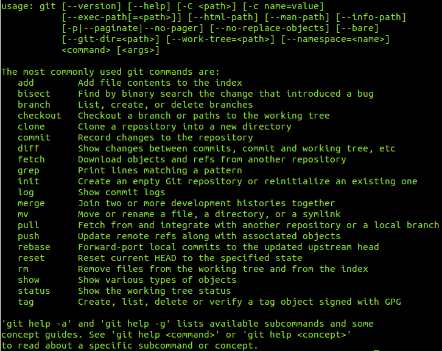
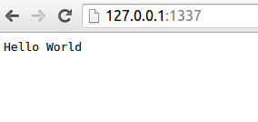
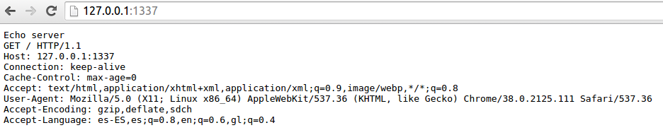

All of these tasks are explained for use it in Ubuntu:
In ubuntu install git in very simple. Open your bash terminal and use package manager like this:
$ sudo apt-get install git
To ensure it is installed correctly,: write in your terminal:
$ git --help
 And you see something like this:
Little tutorial to install and example of use node.js based on the tutorial of the officia page(see fonts section)
Node.js is an open source, cross-platform runtime environment for server-side and networking applications. Node.js applications are written in JavaScript, and can be run within the Node.js runtime on OS X, Microsoft Windows, Linux, FreeBSD, and IBM i.
Node.js provides an event-driven architecture and a non-blocking I/O API that optimizes an application's throughput and scalability. These technologies are commonly used for real-time web applications.
Node.js uses the Google V8 JavaScript engine to execute code, and a large percentage of the basic modules are written in JavaScript. Node.js contains a built-in library to allow applications to act as a Web server without software such as Apache HTTP Server or IIS
1-First run http://nodejs.org/
2-Push install:
3-When the file is downloaded open shell and put the following commands:
To decompress:
$ tar xzvf node-v0.10.36.tar.gz
To install:
$ cd node-v0.10.36
$ sudo make $ sudo make install
$ sudo ./configure
Delete temporary stuff:
$ cd .. $ rm -rf node-v0.10.36.tar.gz node-v0.10.36
We have now installed node.js
This simple web server written in Node responds with "Hello World" for every request.
var http = require('http');
http.createServer(function (req, res) {
res.writeHead(200, {'Content-Type': 'text/plain'});
res.end('Hello World\n');
}).listen(1337, '127.0.0.1');
console.log('Server running at http://127.0.0.1:1337/'); To run the server, put the code into a file example.js and execute it with the node program from the command line.$ node example.js
Server running at http://127.0.0.1:1337/
And you can see in http://127.0.0.1:1337/

Here is an example of a simple TCP server which listens on port 1337 and echoes whatever you send it:$ node
And write:
>var net = require('net');
>var server = net.createServer(function (socket) {
socket.write('Echo server\r\n');
socket.pipe(socket);
});
>server.listen(1337, '127.0.0.1');Then you can see the petition of the browser, in http://127.0.0.1:1337/

you can change server configuration inline with command node. This produces a
loop where the code are written and executed in real time.
Pandoc is a free and open-source software document converter, widely used as a writing tool.
To install it in ubutu put this command in the terminal.
$sudo apt-get install pandoc
To use it to convert marckdown to html5 put something like that:
Atom is a hackable text editor for the 21st century, built on Electron, and based on everything we love about our favorite editors. We designed it to be deeply customizable, but still approachable using the default configuration.
Currently only a 64-bit version is available.
Markdown Preview Plus (MPP) is a fork of Markdown Preview that provides a real-time preview of markdown documents.
To use it press Mayus + Ctrl + M